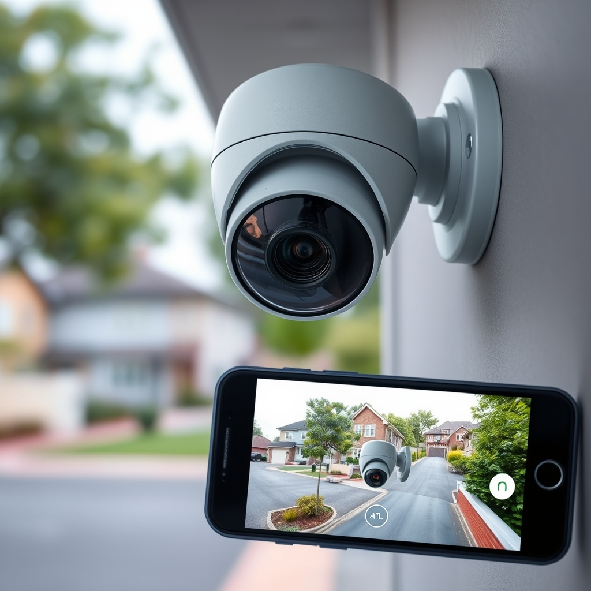

2026-11-09 · Propozycja do akceptacji
Jak długo przechowywać nagrania?
Pytanie klienta: Jak długo można przechowywać nagrania?
🔧 Zastanawiasz się, jak długo możesz przechowywać nagrania z kamer? To zależy od kilku czynników: liczby kamer, rozdzielczości, liczby klatek na sekundę oraz pojemności rejestratora lub chmury. Przy standardowej rozdzielczości 1080p i 15 fps, 1 TB dysku wystarcza na około 2‑3 tygodnie nagrań z 4‑6 kamer. Dla domu zwykle wystarcza 7‑14 dni, co umożliwia szybkie odtworzenie zdarzeń. Małe firmy często decydują się na 30 dni, a przy większej pojemności lub rozwiązaniach chmurowych okres może sięgać kilku miesięcy. Przy planowaniu warto określić, które zdarzenia są najważniejsze i dobrać odpowiednią pojemność, by nie tracić kluczowych materiałów. Masz pytania? Napisz do nas, jeśli chcesz dobrać monitoring do swojej nieruchomości. #monitoring #CCTV #bezpieczeństwo #dom
Nie użyto trendu, post opiera się na ponadczasowej tematyce.